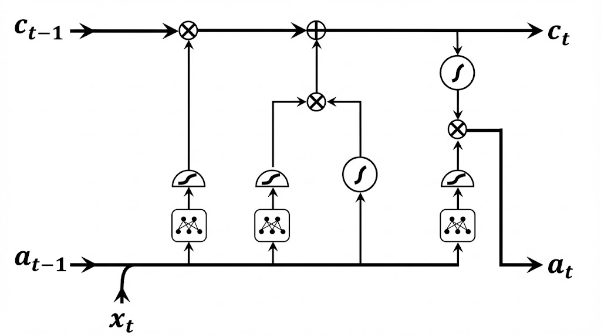

import torch.nn as nn
class ClasificadorRecurrente(nn.Module):
def __init__(self, tipo_rnn, input_size, hidden_size, num_classes):
super().__init__()
# Selección Dinámica de Arquitectura
if tipo_rnn == 'LSTM':
self.rnn = nn.LSTM(input_size, hidden_size, batch_first=True)
elif tipo_rnn == 'GRU':
self.rnn = nn.GRU(input_size, hidden_size, batch_first=True)
else:
self.rnn = nn.RNN(input_size, hidden_size, batch_first=True)
self.fc = nn.Linear(hidden_size, num_classes)
def forward(self, x):
# x shape: (Batch, Seq_Len, Features)
# Propagación
if isinstance(self.rnn, nn.LSTM):
out, (hn, cn) = self.rnn(x) # LSTM devuelve tupla
else:
out, hn = self.rnn(x) # GRU/RNN devuelven tensor
# Clasificación basada en el último paso de tiempo
last_step = out[:, -1, :]
return self.fc(last_step)Arquitecturas de Memoria Profunda
RNN, LSTM y GRU: Teoría e Implementación
1. La Dimensión Temporal en IA
- El Paradigma Estático: Las redes feedforward tradicionales asumen independencia entre muestras (ej. clasificación de imágenes estáticas).
- La Realidad Dinámica: El mundo físico y cognitivo es secuencial (lenguaje, audio, señales biológicas, finanzas).
- La Necesidad de Memoria: Se requiere una arquitectura capaz de mantener un “estado” o contexto histórico para interpretar el presente.
2. Redes Neuronales Recurrentes (RNN)
Concepto Fundamental
La RNN rompe la estructura acíclica. Al “desenrollar” la red en el tiempo, procesa la secuencia paso a paso compartiendo los mismos pesos (\(W\)).
\[h_t = \sigma_h (W_{ih} x_t + W_{hh} h_{t-1} + b)\]
- \(h_t\): Estado oculto (memoria) actual.
- \(h_{t-1}\): Estado previo.
- \(x_t\): Entrada actual.
- \(W_{hh}\): Matriz recurrente (Memoria).
- \(\sigma_h\): Activación (\(\tanh\)).
El Problema del Gradiente
Entrenamiento mediante Backpropagation Through Time (BPTT).
La derivada del error respecto a los pesos recurrentes implica un producto continuo de matrices Jacobianas:
\[ \frac{\partial h_t}{\partial h_k} = \prod_{j=k+1}^t \text{diag}(\sigma'(z_j)) W_{hh} \]
AdvertenciaPatologías Espectrales
- Desvanecimiento (\(\rho < 1\)): El gradiente tiende a cero. La red “olvida” relaciones lejanas (ej. sujeto vs. verbo en párrafos largos).
- Explosión (\(\rho > 1\)): El gradiente diverge. Requiere Gradient Clipping.
3. Long Short-Term Memory (LSTM)
Ingeniería de la Persistencia
Diseñada para mitigar el desvanecimiento del gradiente introduciendo una Celda de Memoria (\(C_t\)) separada del estado oculto.
Innovación Clave: El “Carrusel de Error Constante”. La información fluye por la celda con interacciones lineales (sumas), protegiendo la señal del gradiente.
La neurona LSTM

Anatomía de la LSTM (1/2)
El flujo es regulado por Compuertas Sigmoidales (\(\sigma \in [0, 1]\)):
1. Compuerta de Olvido (\(f_t\))
¿Qué borramos del pasado? \[f_t = \sigma(W_f \cdot [h_{t-1}, x_t] + b_f)\]
2. Compuerta de Entrada (\(i_t\))
¿Qué información nueva guardamos? \[i_t = \sigma(W_i \cdot [h_{t-1}, x_t] + b_i)\]
Memoria Candidata (\(\tilde{C}_t\))
Propuesta de nuevo contenido. \[\tilde{C}_t = \tanh(W_C \cdot [h_{t-1}, x_t] + b_C)\]
Anatomía de la LSTM (2/2)
Actualización y Salida
3. Actualización de Celda (\(C_t\))
Combinación lineal crítica. Aquí ocurre la magia de la persistencia. \[C_t = f_t \odot C_{t-1} + i_t \odot \tilde{C}_t\]
4. Generación de Salida (\(h_t\))
Filtrado de la memoria para el uso inmediato. \[o_t = \sigma(W_o \cdot [h_{t-1}, x_t] + b_o)\] \[h_t = o_t \odot \tanh(C_t)\]
4. Gated Recurrent Units (GRU)
Eficiencia y Simplificación
Propuesta para reducir la complejidad computacional de la LSTM sin sacrificar rendimiento.
- Fusión de Estados: No hay celda \(C_t\) separada. Solo existe \(h_t\).
- Reducción de Compuertas: Solo dos compuertas (Update y Reset).
Dinámica de la GRU
Compuerta de Actualización (\(z_t\)): Fusiona las funciones de entrada y olvido. \[z_t = \sigma(W_z \cdot [h_{t-1}, x_t])\]
Compuerta de Reinicio (\(r_t\)): Decide cuánto del pasado ignorar para el cálculo actual. \[r_t = \sigma(W_r \cdot [h_{t-1}, x_t])\]
Interpolación Final: \[h_t = (1 - z_t) \odot h_{t-1} + z_t \odot \tilde{h}_t\]
Permite saltar pasos temporales o sobrescribir memoria completamente.
Comparativa Técnica
| Característica | LSTM | GRU |
|---|---|---|
| Complejidad | Alta (3 compuertas) | Media (2 compuertas) |
| Parámetros | \(4 \times ((n+m)n + n)\) | \(\approx 25\%\) menos |
| Memoria | Estado Oculto + Celda | Solo Estado Oculto |
| Dependencias | Extremadamente largas | Largas / Medias |
| Datos Requeridos | Alto volumen | Funciona bien con Small Data |
5. Implementación en PyTorch
Estructura modular agnóstica a la arquitectura (“Many-to-One”).
6. RNNs en la Era de Transformers
¿Por qué seguir usando RNN/GRU hoy en día?
- Complejidad Computacional:
- Transformers: \(O(N^2)\) en tiempo/memoria (o Caché KV lineal).
- RNN/GRU: \(O(1)\) en memoria durante inferencia.
- Edge AI / TinyML:
- Ideales para microcontroladores (Wearables, Sensores IoT).
- Streaming:
- Procesamiento de audio/señales en tiempo real con latencia cero (Wake Word Detection).
Conclusión
NotaResumen
- RNN: Fundamento teórico del aprendizaje secuencial. Inestable en secuencias largas.
- LSTM: Estándar de oro para dependencias complejas gracias a su celda de memoria protegida.
- GRU: La opción eficiente. Menor coste computacional, ideal para inferencia rápida y Edge Computing.
La elección arquitectónica depende del balance entre capacidad de memoria y restricciones de latencia/hardware.